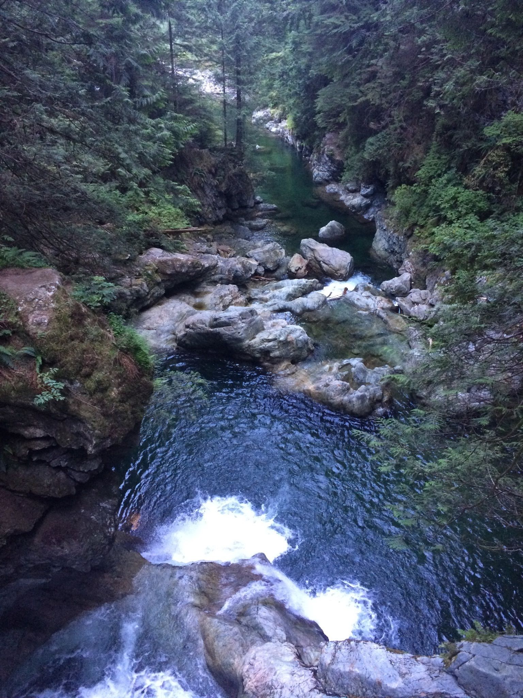
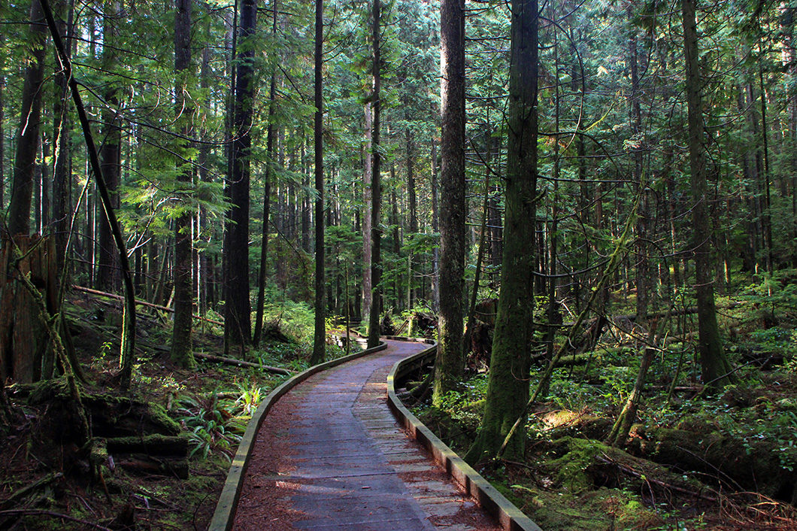
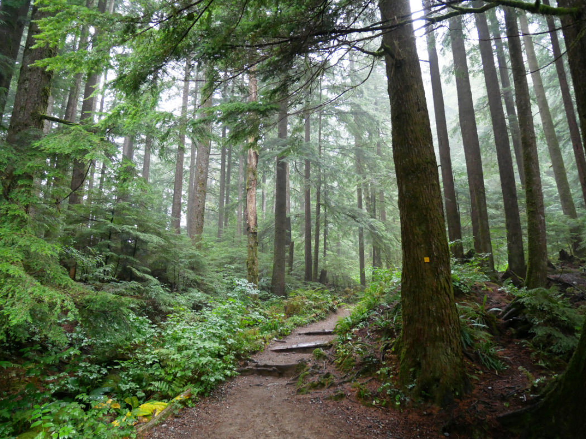

Leave the Road, Take the Trail
So many hikes to choose from! Make sure to stay hydrated and dress for the weather!
So many hikes to choose from! Make sure to stay hydrated and dress for the weather!

Twin Falls is a short, popular hike in North Vancouver that crosses the Lynn Canyon Suspension Bridge and follows Lynn Creek down river before crossing a wooden bridge and looping back on the opposite side of the canyon. While the route is rated as easy compared to many hikes, there is still a significant change in elevation and it is recommended to bring water and be in decent physical shape.

Rice Lake Trail is a 2.7 kilometer loop trail located near North Vancouver, British Columbia, Canada that features a lake and is good for all skill levels. The trail is primarily used for hiking, walking, trail running, and camping and is accessible year-round. You can also fish for rainbow trouts here!

Lower Lynn Loop Trail is a 5.5 kilometer moderately trafficked loop trail located near North Vancouver, British Columbia, Canada that features a river and is rated as moderate. The trail is primarily used for hiking, walking, nature trips, and bird watching and is accessible year-round.